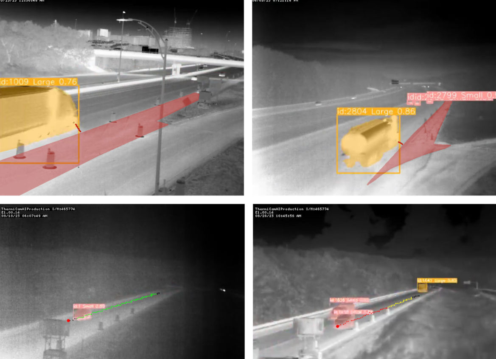

Towards Safer Highway Work Zones: Insights from Deep Learning Analysis of Thermal Footage
This research project aims to develop methods to extract vehicle trajectories, use the trajectories to analyze driver behavior, particularly lane-changing behavior under different conditions, and identify safety hazards and opportunities to improve work zone safety and operations.
Project Overview
Highway work zones present unique safety challenges for both workers and drivers. This project leverages thermal imaging and deep learning to analyze traffic patterns and driver behavior in work zones, providing insights for improved safety measures.
Funding
MassDOT Research Program with funding from FHWA SPR funds